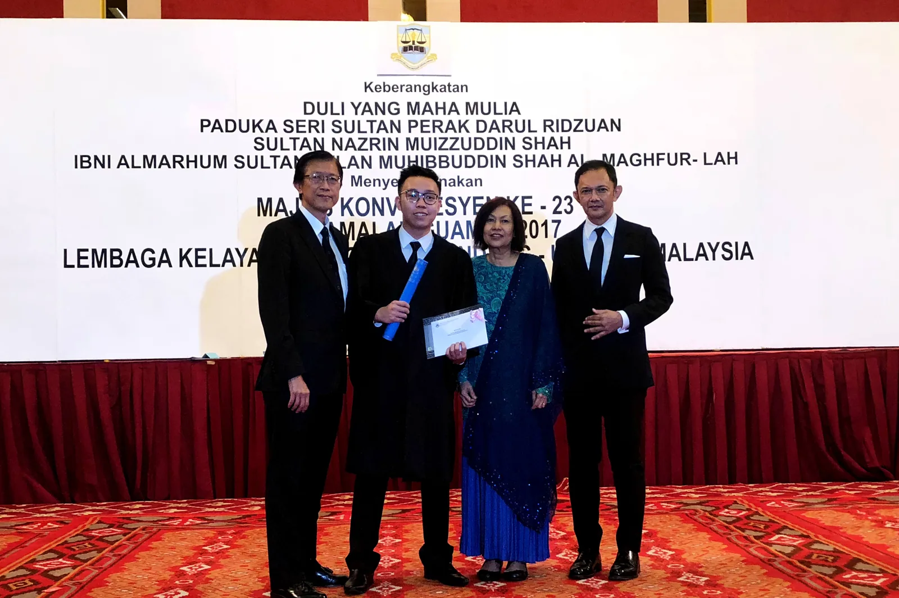
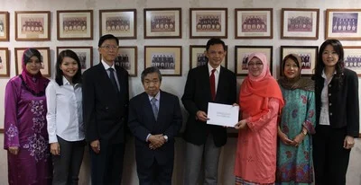
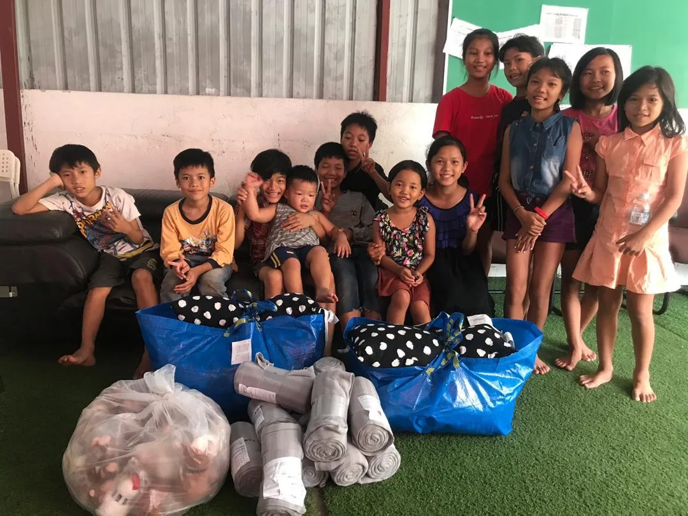
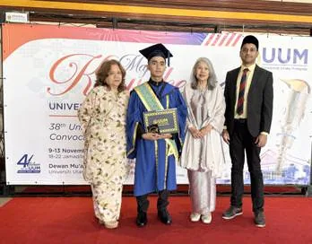
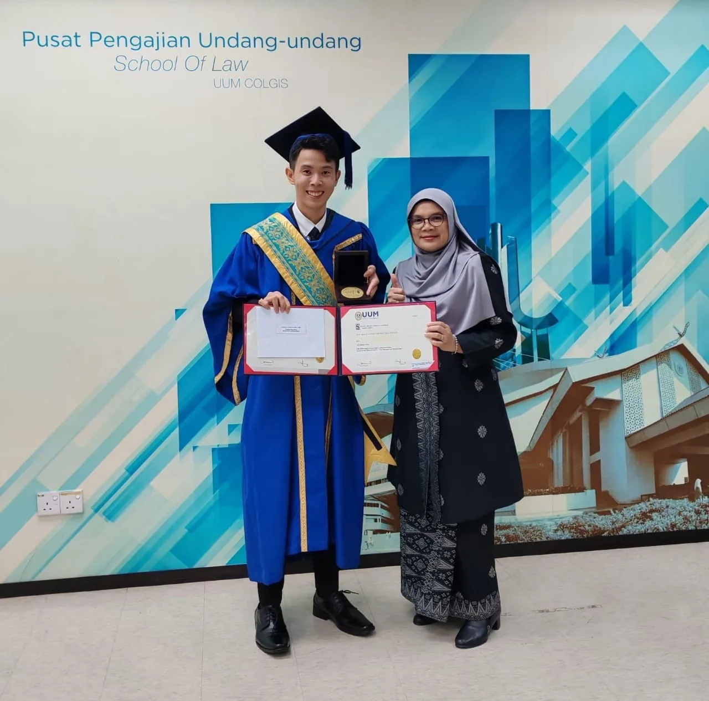

2025AWARDS · UUMYTAH Gold Medal Award in Law — UUM Convocation 2025
↗ ONGOINGSMALL STEPSSmall Steps — practical acts of assistance delivered quietly
↗
10 NOV 2024AWARDS · UUMYTAH Gold Medal Award in Law awarded to Tan Boon Ting
↗ 2024AWARDS · UniSZA
2024AWARDS · UniSZASpecial Award for Best Undergraduate Student in Law awarded to Amanda Wong Jiann Lee
↗ 24–25 AUG 2024PARTNERSHIP · UniSZA
24–25 AUG 2024PARTNERSHIP · UniSZAInternational Conference on Law and Globalisation 2024
↗ 2023CLP PRIZE
2023CLP PRIZEBest Overall CLP Student — Sumita Selvakumar
↗ 10 DEC 2012BURSARIES · IIUMFive IIUM Law students receive YTAH bursaries
↗ 15 OCT 2011SCHOLARSHIPS & BURSARIESYTAH Law Scholarship & Bursary Awards presentation ceremony
↗EXPLORE THE RECORD
Discover the stories behind our work.
This record brings together selected milestones, photographs and programme material preserved from YTAH’s earlier website and current institutional records.